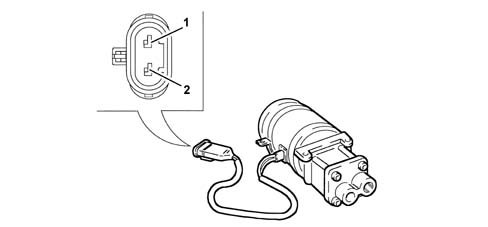
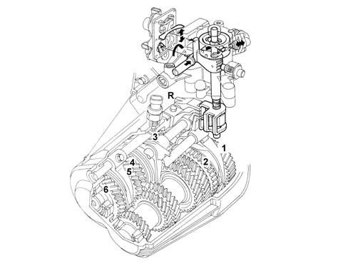
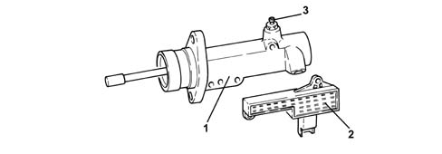
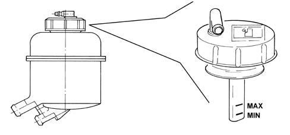

2127C HYDRAULIC GEAR SELECTION SYSTEM
- Path
- Descriptions > 21 GEARBOX UNIT > 2127 HYDRAULIC TRANSMISSION EXTERNAL LINKAGE > 2127C HYDRAULIC GEAR SELECTION SYSTEM
- Kind
- system description
- Applies to
- engines: 2.0 JTS; all production periods
- Interactive page
- https://sloeber94.github.io/elrnDB-aGt/en/#/125000336
Applies to: engines: 2.0 JTS; all production periods; only with equipment: Smart gearbox
COMPONENT DESCRIPTION
ELECTRIC PUMP
This gear pump is coupled to a commutator-type electric motor.
The electric pump is supported by a bracket with vibration-proof fittings.

1. Earth
2. Supply
IMPLEMENTATION HYDRAULIC UNIT
This contains all the proportional solenoid valves and the system hydraulic accumulator.
1. Hydraulic accumulator
2. Even gear engagement solenoid
3. Odd gear engagement solenoid
4. Clutch engagement/release solenoid
5. Brake solenoid (speed selection)
6. Oil pressure sensor
ELECTROHYDRAULIC SELECTION DEVICE
Replaces a conventional gearbox control and allows the gearbox linkages to be operated to change gear.

CLUTCH CONTROL ACTUATOR
Essentially the same as a slave cylinder on a conventional hydraulic clutch system.
Clutch position sensor (2) and system bleed valve (3) is fitted to clutch control atuator (1).

RESERVOIR
The reservoir containing the fluid necessary for the operation of the electro-hydraulic unit is located on the hydraulic pump mounting bracket.
The oil reservoir cover is equipped with:
- an upper breather fitting on the upper part,
- a rod used to check the level of fluid in the hydraulic system.
